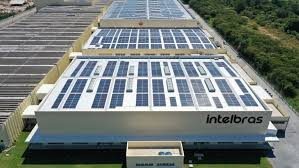
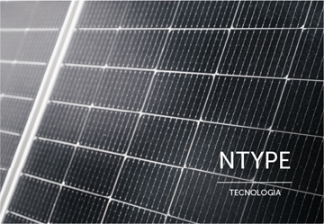
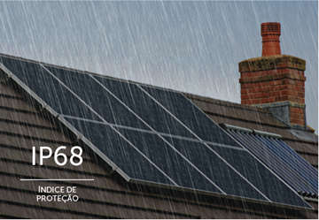

Visão Geral da Tecnologia Intelbras em Energia Solar
Os módulos fotovoltaicos da Intelbras são projetados para oferecer alta performance e durabilidade, utilizando tecnologias modernas como células monocristalinas, halfcell, bifaciais e N-Type. Essas inovações visam maximizar a captação de energia solar e garantir um desempenho consistente ao longo do tempo.
Adaptado em: Visão Geral da Tecnologia Intelbras em Energia Solar
Principais Modelos de Placas Solares Intelbras
Módulo Fotovoltaico Monocristalino EMSD 605B NTYPE
Potência Máxima (STC): 605 W
Eficiência do Módulo: 22,40%
Tecnologia: Monocristalino, Half-Cell, Bifacial, N-Type
Grau de Proteção (Caixa de Junção): IP68, garantindo resistência e robustez em diversas condições climáticas
Dimensões (L x A x P): 2382 x 1134 x 30 mm
Peso: 36 kg
Tensão Máxima de Operação (Vmp): 40,25 V
Corrente Máxima de Operação (Imp): 15,03 A
Tensão de Circuito Aberto (Voc): 48,49 V
Corrente de Curto Circuito (Isc): 15,93 A
Adaptado em: Módulo Fotovoltaico Monocristalino EMSD 605B NTYPE
Módulo Fotovoltaico Monocristalino EMSD 585B NTYPE
Potência Máxima (STC): 585 W
Eficiência do Módulo: 22,6%
Tecnologia: Monocristalino, Half-Cell, Bifacial, N-Type
Grau de Proteção (Caixa de Junção): IP68, assegurando alta durabilidade e proteção contra intempéries.
Dimensões (L x A x P): 2278 x 1134 x 30 mm
Peso: 32.1 kg
Tensão Máxima de Operação (Vmp): 44,04 V
Corrente Máxima de Operação (Imp): 13,30 A
Tensão de Circuito Aberto (Voc): 52,70 V
Corrente de Curto Circuito (Isc): 14,05 A
Adaptado em: Módulo Fotovoltaico Monocristalino EMSD 585B NTYPE
Tecnologias Empregadas
Células Monocristalinas: Fabricadas a partir de um único cristal de silício, proporcionam maior eficiência na conversão de luz solar em eletricidade
Tecnologia Half-Cell: As células são cortadas ao meio, o que reduz as perdas por resistência interna e melhora o desempenho do módulo, especialmente em condições de sombreamento parcial.
Módulos Bifaciais: Capazes de captar a irradiação solar tanto na parte frontal quanto na traseira, aumentando a geração total de energia.
Tecnologia N-Type: Oferece maior eficiência, menor degradação induzida por luz (LID) e melhor desempenho em altas temperaturas, além de maior durabilidade e resistência a fatores ambientais como umidade e corrosão.
Adaptado em: tecnologias Empregadas